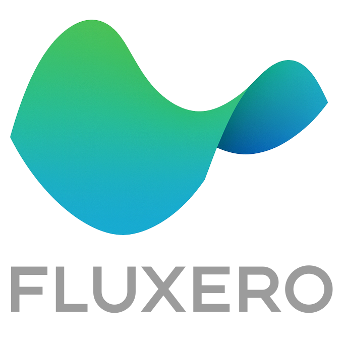

Fluxero Mission
Right now we only use a very small share of the energy that’s available to us. Most of what we rely on still comes from fuels that waste more than they give back. Yet the sunlight, wind and water around us hold far more clean power than we currently need. To put it in perspective, the water in Lake Windermere alone contains enough energy to power all human electricity use on Earth for around 10 billion years.
Our mission is to bring more of that potential within reach — making clean energy not an expensive delicacy, but the foundation of everyday life. By massively increasing its availability and accelerating adoption, we aim for a future where power is abundant, reliable and shared fairly across society.